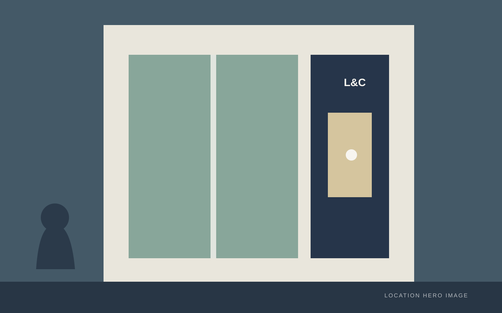

본문으로 바로가기
L&C
LIFE & COMMUNITY
아카데미 소개
프로그램 안내
위치 안내

위치 안내
/
평택 지점 선택
LOCATION UPDATE
평택 지점 안내가
새롭게 변경되었습니다.
평택역점과 평택 세교점 중
방문하실 지점을 선택해주세요.
CHOOSE A LOCATION
방문할 지점을
선택해주세요
01
평택역점 보기
→
02
평택 세교점 보기
→
전체 위치 안내로 돌아가기
→